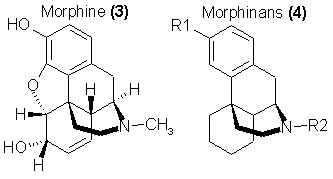
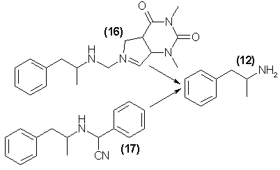

"A strong dilemma in a desperate case! To act with infamy, or quit the place."
- Jonathan Swift
The variety of drugs currently involved in the drug abuse problem is very extensive. As these materials become better defined and their use better
controlled, they will be replaced with substitute compounds, which will provide society with new, unknown, and unmanageable substances. Currently, the
authorities assume that the drug abuse situation has reached its fullest degree of complexity. Therefore, logic would demand that the solution to this
problem would lie in an accurate definition of the materials involved, the construction of an adequately worded prohibition, and the provision of sufficient
force to guarantee these prohibitions. Unfortunately, the rapid growth and spread of socially unacceptable uses of drugs indicate that this assumption may
not be accurate.
This paper will attempt to explore a second possible approach to the problem, one based upon an outline of the rather frightening horizons which may well be
encountered by our society. Within this framework, an attempt is made to anticipate the many directions to which the drug-oriented subculture might turn, to
foresee as many of these future chemical and pharmacologic pathways as possible, and through such predictions suggest a means of preparing ourselves to
recognize and come to grips with future problems.
One must recognize the obvious negative aspect of such an approach. Clearly, there will be made available an itemization of potentially interesting avenues
of financially profitable drug exploration. However, very few who are deeply invested in the preparation of illicit drugs will learn much that they do not
already know or that could easily ire learned from the scientific literature. One who makes a correct prediction in an area of social malaise in which the
attendant misfortunes are direct consequences of human inventiveness, will run the grave risk of having created a self-fulfilling prophecy.
Individual compounds and materials such as alcohol, cocaine, or tobacco are unique, and any attempt to predict their changing roles as drugs of abuse must
be predicated on altered law, social custom, and economics rather than on their chemistry and pharmacology. It is possible, however, that technological
extrapolation is valid when considering certain pharmacologic families of drugs, such as the opiates, the amphetamines, the barbiturates, and the
hallucinogens.
The raw material for such technologic predictions is available in the scientific literature. In every issue of the journals in the fields of pharmacology,
medicinal chemistry, the botanical sciences, and biochemistry, articles appear that advertise the isolation, synthesis, or evaluation of materials which
have some pharmacologic action. Any article describing a new family of compounds ("Potential Centrally Active Stimulants Evaluated in Experimental Animals,"
for example) will encourage an unknown number of synthetic repetitions by underground researchers and manufacturers (with immediate pharmacologic evaluation
in man). These studies follow none of the recognized guidelines for clinical investigation and are not responsible to any regulatory agency. If the results
are undesirable or unacceptable, the matter is forgotten. If the results are considered virtuous or marketable, a new product appears briefly, under some
popularly recognizable name and achieves, de facto, a broadly based "clinical" evaluation. When the product survives this initial marketing experiment, a
new drug problem has made its appearance on the drug-abuse scene. However, if the product proves unacceptable (dysphoric, debilitating, lethal), the inquiry
is dropped. Such explorations continue outside of the awareness of the social body politic.
Even more disturbing, and less easily anticipated, are the novel pharmaceutic agents that may spring forth from the imagination and wit of the illicit
manufacturer himself. He does not advertise the substances of his inventions, nor does he warn others of his failures. The scientific community discovers
these sallies sometimes years after their success or failure. In any events, there are few opportunities to cope with the problems when they are real; many
of them without doubt pass from the scene completely unrecognized.
These potentially expandable families are discussed here within the framework of present day pharmacologic knowledge.

Opiates
The term "opiates" takes on a number of different meanings depending on the context in which it is used. In the strictest sense, it refers to those
materials isolated from the opium poppy Papaver somniferum. The total extract is known as opium, which can be used as such, as the dry mixture of the salts
(Pantopon), or as a tincture (Laudanum). The principal medically recognized component materials are morphine and its methyl ether, codeine. A number of
additional alkaloids are present, probably the most valuable of which is thebaine, a chemical precursor of other active drugs. In a somewhat looser chemical
sense, the term "opiates" has come to refer to those drugs derived from chemicals originating within the opium poppy. The best examples are heroin, which
is a diacetyl derivative of morphine, the numerous clinically recognized members of the morphinone and codeinone group, and the less well studied but
exceptionally potent adducts of thebaine.
In the popular pharmacologic sense, the term "opiates" must be extended to embrace any drug, regardless of chemical origins, that can be substituted for
morphine or heroin in abuse potential. Thus, the family is extended to embrace a host of drugs patterned after some part of the paradigm molecule, morphine,
but which are totally independent of any botanical origins.
The only way an investigator can be certain that an individual has indeed been exposed to heroin or morphine is through analysis of the subject's urine.
A recent study1 has shown that under continuous application of heroin at pharmacologically active levels, no detectable blood levels could be found at
any stage of the experiment. The search failed not only for heroin per se, but for the expected metabolites, monoacetylmorphine, and morphine itself. Urine
levels are easily detected and constitute the basis of a large number of screening procedures designed to detect heroin usage2,3, but as the
principle heroin metabolite is excreted predominantly as a water-soluble conjugate, a preliminary hydrolytic step is mandatory before usual extraction
procedures can provide quantities sufficient for the determination of drug use. This emphasis is important because when a large-scale move from heroin to a
heroin-surrogate occurs in our society, it will be only through a change of metabolite pattern that this substitution will be detected. Only such analytical
evidence will reveal the nature and extent of the "opiate" drug abuse problem.
The term "when" rather than "if" heroin substitutes appear is used intentionally, for this transformation seems economically inevitable4. The
poppy plant from which heroin is obtained grows primarily in the Near or Far East. The plant-produced opium is processed to morphine, which is then converted
synthetically into the diacetyl derivative. It is this latter material that is imported into the United States. The current approach to the control of
heroin usage is through interference with the importation of this product. As this restriction becomes increasingly effective, and without a corresponding
decrease in demand, the drive to create alternative materials that are not opium dependent will grow.
Many of the very effective substitutes for morphine (and to some extent valid as heroin substitutes) are in fact chemically derived from opium alkaloids as
a starting material and therefore do not meet these requirements. A large family of synthetic derivatives of thebaine, however, is an exception; although
they are dependent upon the P. somniferum for the original starting materials, they are intensely potent in humans. As a consequence of the 10,000x increase
of potencies obtainable from such chemical transformations, the manufacture of these drugs as morphine substitutes would be economically feasible in spite
of successful restrictions on the importation of the raw chemical materials. One of the principle alkaloids of opium [thebaine, 1, present to approximately
1% in raw opium, and itself a convulsant rather than a narcotic] can be converted through simple chemical modification into chemicals with a new six-ring
system that shows extremely high morphinomimetic activity. These compounds, after demethylation to the oripavine analog, can be obtained with wide
substitutional variation on either the nitrogen [R1, in 2] or on the new ring generated [vide, R2 in 2].
A large variety of compounds have been prepared with the nitrogen substituent kept as an N-methyl as is found in morphine, but with exercise of chemical
flexibility at the R2 substituent5. Janssen and van der Eycken6 have reviewed the pharmacology of these materials, which have been found to exceed morphine in
potency by four full orders of magnitude.
Ethorphine [M-99, 2] with R1 = CH3 and R2 = -C(OH)(CH3) (propyl) and the O-acetyl derivative Acetorphine (M-183) have been used as
immobilizing agents in the capture of wild animals, and are acknowledged as being capable of leading to a high degree of physical dependence in humans7.
Currently, much pharmacologic research is being devoted to the development of antagonists to the action of morphine and heroin, and to the many substances
that have showed similar activity. The interests in this area are manyfold. The principal clinical utility of such research is to develop a therapeutic
antidote to an overdosage of one of these narcotics. Secondarily, there have been studies that have shown value as a titration tool for the documentation
of recent usage of one of the narcotic agents (through the precipitation of withdrawal effects following chemical challenge). More recently, the use of
antagonists has been evaluated as an insurance against improper parenteral use of morphine-like substances by their incorporation into medicinal
preparations as built-in antidotes. This virtue depends upon assumption that these "antagonists" themselves are without activity. Recent reports on many
of the classes to be discussed in the morphine group suggest that there is certainly some abuse potential in these "antagonists" as well as within the
classes to be antagonized. In general, it has been with the introduction of some homolog of methyl, on the nitrogen, that has led to antagonistic activity.
In the ethenooripavine group discussed here, the introduction of an N-cyclopropylmethyl group (and an isopropanol group at R2) has produced a morphine
antagonist with many times the potency of the paradigm, nalorphine (N-allylmorphine)8. Yet, this drug, (Cyprenorphine, M-285) has been shown to be
hallucinogenic in the naive subject at less than a milligram dose9. The first morphine antagonist based on the benzomorphan system (see below) was the
N-cyclopropyl homolog, Cyclazocine. Although this material is effective against opium intoxication, it also shows some narcotic action in naive subjects.
The dosage for effective antagonism may have to be established gradually due to the "unpleasant initial side effects-which include-hallucinations"10.
These exceptions are noted merely to emphasize the fact that many of the synthetic peripheral areas associated with the morphine line of chemistry have
the potential for producing "socially undesirable side-effects" which are, in fact, the very virtues that are abusable in the drug-oriented subculture being
considered here.
The largest area from which future drugs related to heroin might emerge is that which is completely independent of any opium sources. Many completely
synthetic substitutes for morphine have been prepared and evaluated, and all of them are potentially available from domestic origins. Most of these are
simplifications of the parent morphine carbon skeleton, in which the analgetic (and consistently, the euphorigenic) properties have been maintained. The
principal classes are shown, with both the pictorial resemblance to the original morphine structure and the more conventional presentation.
The tetracyclic analogs of morphine, the morphinans, were first explored by Grewe11 who found that the parent compound N-methylmorphinan
[3, R1 = H, R2 = CH3]12 was about one-fifth the potency of morphine. The hydroxy analog was synthesized13
and a more general synthetic method for this family appeared shortly14. The analgesia, but also the dependence liability potential, was found to
accompany the levo-isomers of these compounds, the orientation that imitates morphine. Much emphasis has been placed upon the dextro-isomers in, that they
maintain the antitussive related clinical virtues without any of the central activity associated with the parent compound, morphine. Thus, dextromethorphan
is a commercially promoted antitussive sold under a host of names such as Vicks-44, Robitussin-DM, Dextrotussin, etc. However there is an extensive abuse
potential and indeed a real abuse associated with the misuse of these agents. The broad availability of dextromethorphan has promoted the misuse of this
chemical, and its name has entered the popular ethic of abusive potential. The racemic synthetic mixture, of course, carries both dextro-potential and the
levo-factual morphine action. Many compounds with disubstitution on the aromatic ring15 are active, but it is with the variation on nitrogen that
the fullest range of morphinomimetic potency has been realized.

Many dozens of morphinan analogs have been synthesized and compared directly with morphine in a number of species as a centrally active analgesic16.
Among the most active derivatives were the phenethylamine analogs and a number of related aromatic systems. Several compounds that were highly active in
rodent screening [such as R2 = p-aminophenethyl and furanylethyl, R1 = OH, in 3] maintained a potency of 20 to 40x that of morphine in primate evaluation.
If these potencies should extrapolate to humans (for which there is much precedent) and if the euphorigenic properties continue to accompany the analgesic
properties (a generality with only rare exception), then submilligram amounts should serve as satisfactory heroin substitutes. It must be remembered that
this family, and all following materials discussed in the framework of heroin substitutes, are chemicals that are readily synthesizable from commercially
available, and uncontrolled, starting materials. Many substitutions have been explored on the aromatic ring of the phenethylamine substitution (see 1171)
and virtually all are equal to, or exceed, morphine in effectiveness. The potential for illicit mischief here is enormous.

Brief mention will be made of a simpler, tricyclic, family of morphine substitutes, the benzomorphans (4). These chemicals were initially explored by May
and Murphy18 and appear to represent the clinically desirable features of analgesia without the usual accompanying dependence liability or undesirable
side effects19. And as it is just these latter two properties that would be needed for satisfactory heroin replacement, the possibilities of abuse is
considerably less. As With morphinans, it is again through variations of the N-substituent that the widest expression of potency and effectiveness has been
achieved. One of these derivatives [4, R1 = OH, R2 = dimethylallyl, R3 = R4 = CH3, pentazocine, Talwin] has achieved wide clinical utility as an analgesic,
and in fact its apparent freedom from abuse liability20 allowed it to be marketed without any of the controls associated with narcotics. However, there
is a growing body of literature to indicate that there is an abuse potential associated with the drug21. Although the dependence-producing potential has
been vigorously attacked22 there are reports of clear hallucinogenesis associated with its use23. A similar analgesic, Cyclazocine, has an
N-cyclopropylmethyl group, and has reported sideeffects of confusion and euphoria24.
Further simplification of the ring systems of morphine leads to three bicyclic systems that carry an immense potential for future exploitation as potential
heroin substitutes. One of these is represented by 5 with R2 some carboxylate ester: this group can be called the meperidine family. The second has the
ester function reversed, with R2 being an esterified carbinol; this group can be called the prodine family, or simply the reversed esters. The third is a
"nonester" analog, ketone function at R2; this can be called the ketobemidone family.
Meperidine [5, R1 = H, R2 = CH3, R3 = CO2C2H5, R4 = H] is a broadly used clinical drug with clear morphine-like properties, which serves to define this
family. It was first prepared25 in a search for atropine substitutes. Its potency is somewhat less than that of morphine26, but it maintains the
dependency liability acid several other. of the clinically undesirable properties of morphine. As noted in both morphinan and the benzomorphan families
above, it is through modification of the substituent on the nitrogen that a broad expansion of potency has been noted in the meperidine group. An excellent
structure-activity relationship study of these compounds has been prepared6, with some potencies many thousands that of morphine having been reported.
Meperidine itself has been shown to be cross-tolerant with heroin both physiologically and psychologically27 and there is no reason not to expect its
more potent but uncontrolled analogs to be similar. A quotation from a recent textbook is timely28:
"Only a few of the more than 4000 chemically modified meperidine structures have received clinical acceptance; some of these, especially
meperidine itself, are useful drugs, but unfortunately none show the desired separation of strong analgesic potency from unwanted side effects."
It must be borne in mind that from the point of view of heroin substitution and illicit drug usage, it is exactly this constellation of "unwanted
side effects" that is in fact desirable. Thus, there are just short of 4000 chemicals already synthetically described and clinically documented in the
scientific literature which might well serve as future drugs of abuse.
The closely related family of the prodine-like compounds or the "reversed esters" are represented by the structure 5 with R2 = OCOC2H5 rather than
R2 = COOC2H5. Interestingly, this simple transformation on meperidine itself increases the potency of the molecule some 20-fold17 and maintains a
cross-tolerance to heroin, although there seems to be some reservation as to its acceptability as a heroin substitute in illicit usage4. In common with
the meperidine group, variations on the nitrogen atom have produced a wealth of active analogs with activities of literally thousands of times that of the
parent molecule29.
In the reversed ester family, the inclusion of a methyl group in the three-position of the piperidine ring gives rise to compounds of potency (and of
dependence liability) equivalent to that of morphine. These materials are called alpha-prodine (with the R4 methyl group cis to the propionyloxy group at
R3) and beta-prodine (with a trans relationship). The latter is the more potent, and has had some clinical use where its rapid onset and short duration of
action is of value30. Again, variations on the nitrogen of this family has led to compounds with many orders of magnitude more potency than morphine,
and thus with a corresponding abuse potential.
The third bicyclic morphine imitation is represented by a ketonic carbonyl in position R3 of 5. The principle drug in this classification is
ketobemidone [5, R1 = OH, R2 = CH3, R3 = COCH2CH3, and R4 = H]. A number of analogs of ketobemidone have been studied in which the nitrogen substituent
has been varied, and several of these are of increased potency17, but there has been no systematic study of this area as can be found with the
methadone and the reversedester families.
The simplest morphine imitations that can be seriously considered as potential heroin substitutes are the monocyclic analogs, in which even the
piperidine ring is opened. This is most conveniently referred to as the "methadone" family. This chemical group was apparently first uncovered by Bockmuhl
in Germany during World War II31 in efforts to find pharmacologic substitutes for morphine. The most direct syntheses of methadone (and the procedures
that are most likely to be employed by illicit chemists) involve diphenylacetonitrile32,33 and lead to a mixture of the desired product [methadone and
isomethadone, isomers with the methyl group located in one or the other of the two, indicated positions in 6]. Both isomers are active as morphine-like
pharmaceutical agents, although the alpha-methyl compound has been accepted as being of a higher therapeutic safety value. Illicit methadone production as
a heroin substitute is apt to be found as a mixture, as the separation is troublesome, and the two isomers are not grossly different pharmacologically. A
variation of the isomethadone (7) structure, with reversed ester structure at R3 [6, R3 = OCOC2H5, and R4 = CH2C6H5) is the analgesic propoxyphene
(Darvon). It is not under narcotics control, and has not yet shown appreciable abuse potential. Although little exploratory work has been done modifying
the structure of methadone, three areas of chemical and clinical interest are noteworthy. One, the reduction of the ketonic carbonyl group to a carbinol
group and the corresponding acetylation of it leads to the acetylmethadol group of compounds, which seem to be of comparable activity, but with slower onset
of action, and of longer duration34. This compound is now being explored quite widely in substitution for methadone in the area of methadone maintenance
and methadone withdrawal in heroin recovery clinics35. No chemical extrapolation of this promising lead has been reported.
A second area of methadone structure modification has been reported36 in which the quaternary carbon [in 6, carrying R3 and R4] has been replaced by
nitrogen. Two clinically accepted drugs have resulted, phenampromide (8) and diampromide, which have potencies comparable with meperidine, but which have
similar capability for the generation of dependence.
A third area of morphine-like activity has been found with substitution upon the nitrogen atom of methadone. A series of 4,4-gemdisubstituted piperidinyl
analogs have been found6 to be some 1500 times as potent as methadone, and to be quite a bit longer acting. There are no studies of these chemicals in
humans, but there is certainly represented here a rich area of potential chemical exploration. An outgrowth of this line of exploration is the development
and clinical evaluation of morphine-like analgesics such as Fentanyl (9) (active in humans as a narcotic at about 25 µg intravenously) and its
isopropylamine analog, which is about twice as active. The exquisite reasoning that has produced this logical development of drugs is apparent from the
comparison of their structures below:
There is no reason to expect that all materials that might appear as potential heroin substitutes must be based on the structure of morphine. Many of
the very active compounds such as meperidine and methadone have only the most remote resemblance to the parent alkaloid. Many compounds have sprung forth
with little if any relationship to known pharmacologic logic, and have been found to be analgesic (as compared with morphine) and to have, most strangely,
the dependence-producing capability of morphine. For example, dimethylthiambutene (10)34 is clinically well compared with meperidine38. Yet this
material achieved illicit usage in Japan and provided clear demonstrations of addiction27.
A further extension of this non-resemblance to morphine is seen in the structures of a number of benzimidazoles that have proven to be similar to
morphine in potency as central analgesics. A highly potent derivative (11) has about a thousand times the potency of morphine, but the respiratory
depression and the proclivity to develop de ndence were much the same as is seen for morphine and heroin39. Therefore, although this line of chemistry
is not clearly productive in the clinical area, it is nonetheless a fertile field for the search for heroin substitutes that can be domestically synthesized
and are potent at levels that would encourage illicit investigation. Two analogs of this family have been recognized and documented in the scheduled drugs
list as materials with high abuse potential and without redeeming medical utility; these are the compounds with a para-chloro group (Clonitazene) and a
para-ethoxygroup (Etonitazene) as substituents of the phenyl group in 11. (See the last section for a complete listing of all scheduled drugs as related
to these chemical classifications.) This family seems to be quite versatile chemically40 but the most potent compounds still retain the dependence
liability of morphine39.
There seem to be many thousands of potential morphine and heroin substitutes, of which some few score are listed in the registry of scheduled drugs,
presented at the end of this paper. Clearly, to list all possible future abusable drugs would be a hopelessly laborious undertaking, and to list
generalized families would compromise the many necessary drugs that are presently being used clinically.
Stimulants
A second, and probably as large an area of drug abuse reality and drug abuse potential, is the category that can be called the drugs of stimulation.
This is a most delicate classification, as, although there are a large number of recognized stimulants (pharmacologically, sympathomimetic agents), all of
the pharmaceutical houses have found a number of alternate and less suggestive classifications for their products. These are drugs that can "clear the nasal
passages, suppress the appetite, or alleviate depression" but that are not in themselves "stimulants." In truth, all of the chemicals to be considered here
can be used and have been used to better cope with social pressures and can thus be grouped together under the relatively unbiased term "analeptics."
The best defined and most extensively studied examples of this form of central stimulants are chemicals commonly referred to as amphetamines. The use of
the plural term "amphetamines" is widespread, but it is ambiguous. The term "amphetamine" is a single specific compound, 1-phenyl-2-aminopropane (12) and
the most restricted use of the term "amphetamines" applies to this chemical, either of its optical isomers, and generally the N-methyl homolog
methamphetamine (13) and its isomers. A more general use has come into both legal and medical literature that considers that larger family that shares the
common chemical carbon skeleton of the amphetamine molecule and that can in the pharmacologic sense serve as a substitute. A third usage, found in phrases
such as "hallucinogenic amphetamines," refers to compounds exhibiting the basic carbon skeleton of the amphetamine molecule, but that are so separate in
their pharmacologic expression that they can in no way be considered stimulants. They are discussed in the Hallucinogen section below.
Amphetamine, as the racemate and as its optical isomers, and the monomethyl homolog methamphetamine, are, without question, the most widely prescribed,
used, and abused stimulants within this family. The awareness of this abuse is tacitly recognized by the transfer of all forms of these two chemicals from
Schedule III to Schedule II in 197141. The extent of this abuse potential is apparent from the letter sent at that time42 to the registered
pharmacists in the country, that listed by name (in an admittedly incomplete compilation) some 102 commercial forms of prescribable drugs containing only
amphetamine or methamphetamine, and 291 additional drug forms that contain one or the other of these in combination with additional active ingredients. At
least 393 separate brand names were at that time being produced by at least 204 independent manufacturers. There is no question that abuse of these two
fundamental compounds will persist well into the future. They are easily synthesized, as attested to by their costs as chemicals (d-amphetamine, $25.35/100
gm, and d-methamphetamine as desoxyephedrine hydrochloride, $13.65/100 gm)43. This documents a foundation cost of perhaps 2 cents per dosage unit and
would seem to assure the continued availability of the drugs, at least through illicit sources. The widely recognized precursor to both drugs is
phenylacetone, which although being noted at all supply sources as a chemical potentially employed in the synthesis of controlled substances, is itself
quite inexpensive (less than $10.00/lb) and is not by law a controlled chemical.
The broader use of the term "amphetamines," as defined above, embraces a large number of prescription stimulants, which have been justified by their
manufacturers as being valuable for a broad range of deficiencies. The two general categories of action include use as antidepressants that brighten the
mood and improve performance, and use as anorexogenics in case of obesity. It has been said that the effects of the appetite suppressants are actually
"Those of central stimulation which may distract the patient from eating and encouraging dietary cooperation"44. Therefore, these two latter
pharmacologic families actually become one. Additional clinical applications of these materials, such as the treatment of narcolepsy, the counteraction
of other medications producing drowsiness, even the paradoxical employment in preadolescent behavior problems, apparently all depend principally upon their
actions as a central stimulant. It is just this activity that provides their abuse reality and potential.
The future of drug abuse in the amphetamine-like stimulant group, and the drugs to be abused in the future, can be projected with some confidence from
the development of the present problem. The earlier discussions of the narcotic analgesics indicate that there has been a major synthetic and clinical
effort made to develop drugs that would maintain virtue (analgesia) while minimizing undesirable side effects (euphoria, physiologic dependence liability).
An added impetus to this diversity has been the economic requirements associated with patents and proprietory rights of the developing research laboratories.
The same arguments apply to the stimulants. The search continues for products that fill clinical needs (anorexia, antidepression), minimize the potential
for abuse (excitability, psychologic dependence liability), and are proprietary. It seems axiomatic that the hoped-for properties are always accompanied by
the hoped-against properties. The degree to which a compound can provide relief from depression through stimulation is the degree to which the compound can
be abused either through overuse or through chronic use.
The original amphetamine stimulants, amphetamine and methamphetamine, have been displaced by a number of chemically related drugs that have the
phenylisopropylamine skeleton and that appear to varying extents to duplicate the action of amphetamine. Rather than establishing a class regulation (as
has been done in Great Britain with the Drugs Act, 196445), the procedure followed has been to treat each drug individually and to move it from
uncontrolled, to prescriptional availability, to appropriate scheduling in the Controlled Drugs structure as abuse reality became apparent. Thus
amphetamine, used clinically since 193546, and methamphetamine received extraordinarily broad abuse both in the United States and abroad after World
War II; they are now Schedule II drugs. Of the many substitutes for amphetamine that were prepared and evaluated in the post-war era, both methylphenidate
[Ritalin, 14] and phenmetrazine [Preludin, 15] have been documented with sufficient misuse to warrant scheduling (to Schedule II, November 1971). As was
mentioned in the substituted piperidine portion in the narcotics section, the concept of the reversed ester (the replacement of a [-COOR] group with the
isometric [-OCOR] group with a retention of pharmacologic style of activity) also applies to the Ritalin molecule.
The reversed ester of 14 is levophacetoperane, which is similar in action to Attalin (stimulant and antidepressant) and only slightly less potent in
humans47. This latter variant is relatively unexplored and of course legally unrecognized.
There are many additional amphetamine analogs that are commercially available upon prescription as antidepressants or anorexogenics, and that might well
have the capability of being abused in the same manner as have been the others, but for which there have been as yet no indications of abuse. These include,
among others, benzphetamine, phenteramine, phendimetrazine, diethylpropion, and a host of others still in the investigational stages. In the future, it is
axiomatic that some of these will be misused, and so might become our future drugs of abuse.
A point of metabolic interest may be mentioned here, as it may serve as a clue to another class of potentially abusable stimulants. A frequently asked
question is: How can one determine the extent of abuse of a specific drug? In cases of rampant and conspicuous abuse, there are many indications such as
the sources of the drug, the overwriting of prescriptions, the thefts from druggists' suppliers, and the broadcast availability of illegally purchasable
supplies on the street. But this would imply an already established abuse. To anticipate an abuse problem, it is necessary to anticipate these signs. And
one of the potentially powerful tools for such previews is the unusual fact that, in humans, both amphetamine and the homolog methamphetamine are excreted
in the urine to a large measure unmetabolized. This has been used as a device for screening the population for indications of the extent of amphetamine
abuse. However, there are two completely unrelated classes of stimulants that are only superficially related to amphetamine chemically, but that are unusual
in that they are cleaved through their normal metabolism into either amphetamine or methamphetamine. These are easily synthesized families and they appear
to serve as substitutes for amphetamine in the call for stimulatory properties, and yet their abuse, as noted by the development of recognizable urinary
metabolites, would be assigned to amphetamine.

The first of these is illustrated by fenethylline [Captagon, 16], which was first prepared some 10 years ago, and is now easily available in Europe as
a nonprescription analeptic agent. It is apparently cleaved metabolically in humans into theophylline (a weak stimulant closely related to caffeine) and
amphetamine, and it has been shown that the action of the parent drug may be correlated to the production of amphetamine in vivo48. If this form of
metabolic cleavage proves to be general, then any of a large number of stimulants can masquerade as covalently complexed materials that are physiologically
available only through metabolic conversion.
A second type of abuse drug is suggested by the structure of the material Aponeuron [AN-1, 17], which is prepared by the coalescence of amphetamine,
benezaldehyde, and cyanide, and which apparently releases the contained amphetamine following introduction into the body49,50. These chemical extensions
are probably documentable in their abuse only through the appearance of amphetamine in analyzed urine samples. It will be of scientific as well as social
interest to see if similar chemical manipulations (the conversion of a recognized and scheduled drug into a legally innocuous analog which will regenerate
the original drug in vivo) might be extended to include the many structurally similar stimulants and hallucinogens.
Close relatives to these centrally active, sympathomimetic, amphetamine-like compounds are a growing number of simple bases employed as decongestants
and agents of relief in asthma conditions. These are chemicals pharmacologically related to ephedrine (18) and largely imitate it in their capability in
dilating the bronchi, but all have shown some degree of potential for central stimulation.
Ephedrine itself is a drug of antiquity, being the active ingredient of plant extracts of Catha Edulis51. In recent years a number of synthetic
analogs have been introduced into clinical practice with the hopes that the index between decongestion and stimulation would be improved to minimize abuse
potential. A number of these are currently employed as vasoconstrictors and pressor agents [Neosynephrine (phenylephrine); metaraminol; Propadrine
(phenylpropanolamine); mephentermine (Wyamine)]. Documentation for the abuse potential within this family is provided by a report of mephentermine-induced
psychoses52 that were clinically identical to examples seen in cases of amphetamine misuse. Hydrogenation of the aromatic ring to produce the totally
aliphatic analogs, both alicyclic and open chain, of amphetamine and methamphetamine has been a device used to exclude central action while maintaining
only the desired bronchial and vascular effects of ephedrine. However, there, have been reports of misuse and abuse, leading to druginduced psychotic
states involving these materials [53]. Dozens of pharmacologically related sympathomimetics are currently being investigated clinically, and there is
little question that many of them will have the potential for stimulatory abuse.
Another class of mild central stimulants that are reportedly without tolerance-building capabilities or antidepressant properties are compounds based
upon the structure of Pipradrol (diphenyl-2-piperadylcarbinol, 19).
There seems to be a valid generalization that if the piperidine ring is alpha-attached to the benzylic carbon (with or without the benzylic
hydroxyl group) the compound has sympathomimetic properties. It is, under these circumstances, a substituted ephedrine or amphetamine. Some of the
clinically explored analogs are highly potent as stimulants. An analog studied by the Schering group (Sch-5472, 20) is effective in counteracting fatigue
in humans at submilligram levels54. If the piperidine ring (often as a piperazine ring) is attached through the nitrogen atom, the resulting compounds
appear to be effective agents in relieving motion sickness (vide cyclizine, Meclizine), although example of this positional isomer are known to be
stimulants (see Su-19789B, 2-[p-methoxy-alpha-(1-piperidyl)-benzyl]-cyclohexanol55). Reports of abuse of such antihistamine motion-sickness drugs
have been reported56,57 in intentional attempts to produce drug-induced sensory changes. If the attachment is at the gamma-position of the piperidine
ring, one can find antagonist actions to these stimulants. It is only with this first, the alpha-substituted piperidine group, that structural manipulation
seems likely to lead to new and more potent drugs.
A recently developed and commercially successful class of psychotropic drugs are the tricyclic antidepressants related to imipramine. This varied group
of drugs seem to be stimulants in cases of pathologic depression (as in the depressed phase of manic depressives) but appear to have little effect in
normals. However, their potential for abuse is well established, since they have clearly defined stimulatory action in cases of chronic usage58 and have
been encountered increasingly frequently in post-mortem examinations of accidental deaths due to possible drug overdosages59. This class of drugs is
currently available only by prescription. They are reasonably sophisticated in their syntheses, and should provide little incentive to the illicit chemist.
This is not true in the case of another well-known stimulant, cocaine (21). There appears to be a recent increase in popularity and usage of the drug,
although much of that which is claimed to be cocaine is extensively diluted with procaine60 and methedrine61. Classically the drug has been obtained
from the Coca tree, which is native to South America. However, the growing popularity of the drug and the extremely high price demanded in illicit trade
have attracted the attention of the underground synthetic chemists, and there is indeed evidence that the drug is currently being synthesized62. It is
true that cocaine of legitimate commerce is already semisynthetic. The crude coca alkaloids are saponified to the compound ecgonine, which can be easily
reconstituted to pure cocaine by benzoylation and esterification with methyl alcohol.
The total synthesis of ecgonine (and thus of cocaine) is more tedious. However, the procedures have been in the chemical literature for decades63 and
employ easily available starting materials.
It seems reasonable to anticipate that as more synthetic attention is directed toward this family of stimulants, more easily prepared analogs will be
seriously investigated as cocaine substitutes. In the case of cocaine itself, it is known that variations of the carbomethoxy group leads to no dimunition
of either anaesthetic or stimulant properties, although most substitution changes on the benzoic acid moiety lessen activity. A similar but chemically more
easily accessable molecule is represented by benzoyl-pseudotropine (22), also a component of Erythroxylon coca64 and also known to be centrally
active. Care must be shown in classifying these compounds. The pseudotropeines are esters with configuration shown for 22. These only are the stimulants
and anaesthetics. The reversed stereoconfiguration of the eater group (the OCOR on the side of the piperidine ring opposite the N-CHa rather than on the
same side) leads to the normal tropine series as found in the natural alkaloid atropine and in several clinically valuable synthetic drugs such as
benztropin. This latter family is largely parasympatholytic rather than sympathomimetic, and its future abuse potential is discussed in the section on
hallucinogens.
Another, yet simpler, series of potential cocaine substitutes might be found in the open-chain piperidine analogs such as 23. A number of these
extremely easily synthesized esters have been employed in imitation of cocaine as contact anaesthetic agents, or in imitation of atropine as mydriatic
agents, but there is little information at hand concerning their abuse potential using the parenteral routes employed with cocaine.
Depressants
A third family of abuse drugs, with both a current history of extensive illegal availability and a future potential as a major problem, are the
depressants. The term depressant is inexact, for the pharmacologic expression of action is strongly dependent upon the dosage of the drug employed and the
setting in which it is used. The materials to be discussed under this heading are, in small dosages, primarily sedative. This means that in the absence of
a stimulative or reinforcing environment, there is a diminution of sensory sensitivity with the corollary reduction of activity. In the presence of active
sensory input, the response to modest dosages is one of intoxication, of physical limitation in responses, and of an intellectual uncertainty in social
interaction. At higher dosage levels, the sensory depression becomes overwhelming, and a hypnosis or sleep state predominates. This presentation is
concerned with the potential for the appearance of new drugs in this area of abuse.
The barbiturates represent one of the oldest and best established pharmacologic examples of the sedative-hypnotics or depressants. In the strictest
sense, the barbiturates are any of some 35 prescribable 5,5-disubstituted derivatives of bartituric acid in accordance with the generalized formula 24.
In their variation of structure, the R groups can vary from C1 to C6 alkyl groups, with or without unsaturation, with or without bromo groups, and one can
be the phenyl group. None of these drugs are highly potent; it is rare to find a prescription calling for less than 50 mg, and with some of the
longer acting drugs ten times this level is commonly used.
From the viewpoint of clinical utility, there need be only a fraction of this number available, but from the drug-abuse potential, there may soon be ten
times this number. There is clinical need of drug-induced sedation, but it is difficult to see (outside of the proprietary and patent positions of ethical
houses) why perhaps three barbiturates might not serve all medical needs. One of long duration, perhaps with some anticonvulsant virtues as well, such as
phenobarbital (25) is needed. An intermediate-term agent that is well tolerated should be available; and, lastly, a short-acting agent for preparation for
anesthesia or as a surgical adjunct. Yet the permutations of the various possible R-groups in 24 yield literally thousands of possible structures, all of
which certainly have some hypnotic action and, thus abuse potential. Admittedly, the BNDD scheduling has blanketed this structural class; however, one
wonders if making a material illegal has ever seriously deterred its preparation, assuming there is sufficient financial reward associated with its
distribution.
The inventive illegal chemist has several structural modifications available to him. The substitution of one of the N-H groups of 24 with an N-CH3 increases the potency of the drug some two to three times. An example is Metharbital (26), which is used more frequently as an anticonvulsant than as a sedative. If there are two N-methyl substitutions the resulting compounds are convulsants. The classification of either class of compounds as "Barbituric Acid Derivatives" would be extremely difficult to document legally, and it is a real possibility that such homologs would lie outside of the current narcotics laws.
In the last, few years a large number of chemicals have appeared for clinical use which are pharmacologically interchangeable with the barbiturates,
but which chemically lack one of the nitrogen atoms of the parent heterocyclic ring.
Properly, these materials are piperidones or piperidiones, and in no conceivable way can they be in the drug class of barbiturates, legally.
Two of the better known examples of such compounds, both in the pharmacologic sense as well as in their appearance on the street, are glutethimide
(Doriden, sold illegally as "Cibas" due to the inscription on the tablet) (27) and methyprylon (28). Both of these chemicals have been now incorporated
into the scheduled lists of the Bureau of Narcotics and Dangerous Drugs, in immediate company with the barbituric acid derivatives.
There are at least two future problems that can be foreseen in this area. The first is that these materials, having been classified as substances other
than barbituric acid derivatives (and properly so), establish the precedent that any homologs and analogs of these classes may be considered as being
outside the blanket description of "barbiturates." There are literally dozens of rather easily synthesized analogs of both 27 and 28 that are
established pharmacologically as depressants, and that are not controllable as a family (barbiturates) or as specific drugs (only gluthetimide and
methyprylon are named). A second problem lies fallow in the literature, and it will take only a single devoted and industrious chemist to reveal it to the
drug subculture. It has been evident for many years that there is a close interrelationship between anticonvulsant and convulsant activity, and between
sedative and stimulant activity. Within all of these families, it is a consistent observation that if one extends the alkyl chains, or if one adds
increasing N-alkyl substitution, one tends to generate activity out of inactivity, or to shift from a quieting of the CNS to the stimulation of it. Yet
another structural rearrangement is known that similarly could be a starting point for a family of abuse drugs. If the alpha,alpha dialkyl groups of
glutethimide are translocated to the beta-beta-corresponding positions, one can find an entirely new family of drugs, those related to the commercial
compound Bemegrid (29). This latter material is a CNS stimulant, and it is reasonable to expect that many of the possible analogs of this simple compound
will be pharmacologically equivalent, differing only in the dosage required for effective activity.
Recently a new class of sedative hypnotics have appeared and enjoyed a rapidly spreading popularity. A representative of this class is the drug
methaqualone (30), which is sold under a number of trade names (such as Quaalude and Sopor). The potential for abuse and physiologic dependence is
well documented in Japan, where the drug was introduced many years ago, and where in the latter part of the sixties surveys implicated this sedative in
the majority of hospitalized drug abuse cases. The drug was introduced about 15 years ago in this country, and apparently the same patterns are evolving.
Over the last year there has been a broad popularization of this material in the press65-67.
Although this family of readily synthesized chemicals was originally prepared with antimalarial activity in mind, the first pharmacologic activity observed
was that of analgesia68. The evaluation of a number of these materials as hypnotics69 led to the selection of methaqualone as a preferred clinical
choice. The widely recognized abuse of this drug led to the proposal to list it as a Schedule II drug70. However, a large number of derivatives both
with substitution variation in the mono-substituted phenyl ring [31, R1] and in the fused benzo-ring [31, R2] have been found to possess varying
degrees of sedative and hypnotic activity [71]. Currently, several are being clinically explored. [Mecloqualone (31), R1 = Cl, R2 = H72; Ethinazone,
R1 = C2H5, R2 = H73; SL-164, R1 = 2-CH3-4-Cl, R2 = 5-Cl74]. The simple synthetic procedures that give rise to members of this family, the
interaction between acetylanthranilic acid and a substituted aniline, promise an almost unlimited variety of future abusable drugs.
Another new and increasingly abused class of depressants are the benzodiazepines. Two of the most widely used prescriptional alternatives to the
barbiturates or to meprobamate in anxiety and tension states are chlordiazepoxide [Librium, 32] and diazepam [Valium, 33].
There is no question but that these drugs, along with several related analogs such as flurazepam (Dalmane) and oxazepam (Serax), are abusable, and that
there are frequently observable cases of performance decrement resulting from their chronic (and legal) usage. There is documented evidence of extremely
distressful withdrawal symptoms following extended usage75,76. The question regarding these drugs, and for that matter all prescribable psychotropic
drugs of such nature, is whether their abuse potential and liability is sufficient to warrant imposing the requirements of registration and bookkeeping
associated with scheduling under the Bureau of Narcotics and Dangerous Drugs. Such proposals have been made in the instances of Librium and Valium, but
the issue is not yet resolved. There is, at present, no indication of illegitimate preparation and sale of such drugs; their availability is substantially
entirely through proper medical channels, and there is little of the social reinforcement that usually accompanies the chronic drug abuse associated with
the other depressants.
A difficult-to-classify family of drugs are those related to phencyclidine (34) as a parent substance. These materials are dissociative anaesthetics in
their clinical application, but are widely abused due to the consistant visual synthesis experienced as a side reaction of their use. These compounds
are probably best classified with the extremely fast-acting barbiturate anaesthetics in the pharmacologic sense.
In recent years there has been an immense increase in the use of phencyclidine and its close relatives. In part this is due to the easy synthesis of such
compounds from inexpensive, commercially available precursors. The presence of a small level of phencyclidine in conjunction with another drug can serve
as an extender of activity. These misidentified mixtures are often encountered in the area of the hallucinogens. Frequently, the drug-user has been unaware
of the addition of such materials.
Although phencyclidine itself has been placed within Schedule III of the BNDD's listings of controlled substances, the original chemical literature
describes the synthesis of a large number of closely related compounds77 and the associated patent literature gives quantitative data as to their
potencies in humans78. In the last two years a number of these analogs have appeared on the illicit market, viz. the N-ethyl homolog [35, R1 = C2H5]
and the thiophene analog [35, Ar = thiophenyl, R1, R2 = pentamethylene]. These latter two compounds are similar to phencyclidine in activity, both
quantitatively and qualitatively, and are not included in any current drug listing. Of course these could be the harbingers of an open-ended number of
varients, many of which could be predicted to maintain this form of biologic activity.
Hallucinogens
The hallucinogens as a family of drugs must stand apart from those previously discussed in this paper. There is generally accepted clinical utility for
the opiate-like narcotics, for the stimulants, and for the sedative-hypnotics, but there is little agreed-upon medical justification for the hallucinogens.
There are only anecdotal79 organic pathologies that are clinically responsive to them. These materials have been extensively explored as a research tool
in efforts to unravel some of the biologic parameters associated with abnormal mental states. Thero is no longer any argument against the observation that
similarities exist between the artificial intoxication induced by these compounds and spontaneous schizophrenia. Several of the hallucinogens have been
explored as agents in psychotherapy, exploiting the disinhibition of affective restraint and the recovery of suppressed thought-processes that so often
accompany the intoxication. A number of these materials have been broadly explored as introspective agents of change in the exploration of states of
consciousness, of creativity enhancement, and in efforts to achieve an improved degree of self-understanding. All of these ends have been achieved by some
of the agents, but none of these fall within the category of "established medical utility." Some of these materials are used for their relaxation or
entertainment value, and although such uses are medically tolerated, there are alternate, socially acceptable agents that achieve the same state.
Another problem associated with this family of drugs is one of nomenclature. The term "hallucinogens" has been used here in the title, as it is probably
the name most frequently associated with these compounds in the popular press and in the statutes. This is a misnomer, however, as many of these materials
are not known to give rise to any such phenomenon. In the large majority of the extensive scientific and literary writings concerned with subjective
descriptions of the effects produced by many of these drugs, the term "hallucination" is not used. An artificial word "psychotomimetic," literally
psychosis-generating, is frequently employed. The above-mentioned capability of mimicking some of the clinical aspects of disturbed mental states generated
this term; however it is far too encompassing, and is generally restricted to medical research studies. The term "psychedelic" is often used and is closely
associated with the intellectual and socially oriented properties mentioned above. It is rarely, if ever, found in the scientific literature, as there is
an accompanying connotation of approval and sanction. The term psychodysleptic is found in European publications, but it, too, is artificial.
Further differences between this family of drugs and the previously mentioned families is the notoriety that seems to be a direct consequence of some of
the above points. There is a highly vocal minority who advocate drug use as a harmless contribution to their life style and who feel they have been
unjustifiably maligned by those who do not share their opinions. On the other hand, there is an equally unreasonable reaction by a minority who condemn
this area of pharmacology without qualification. As a result of this continuing conflict, there is an unjustified newsworthiness in the area of the
hallucinogenic drugs, and a consequent tendency to exaggerate the problems of abuse.
In this paper these materials will be organized into groups reflecting their potential for abuse in the future, those which are, in fact, unknown and
probably will remain so, those contributing to the present problem but which have little promise for creating new dimensions of difficulties, and those
representing the more likely candidates for future contributions to the drug problem.
Many scientifically documented hallucinogens are actually unknown in illicit usage, since they are unavailable, due either to botanical rarity or to
synthetic complexity. As a consequence there is a high level of misrepresentation that is largely undetected, as there are very few avenues that can be
used to correctly document the identity of an alleged hallucinogenic drug. Many of these are complex organic molecules, usually alkaloids, which are
widely discussed among the drug cognoscenti but which are, in fact, so rare as to constitute a negligible problem. Examples are the alkaloids psilocybin
and psilocin from the Mexican mushroom Teonanacatl (Psilocybe mexicana), as well as the dissimilar alkaloids from the Amanita muscaria, muscimol and
ibotenic acid. These materials are unknown in the illicit drug trade.
Another family of chemicals that has received wide publicity and consequently wide popularity are the synthetic chemicals related to the alleged active
ingredients of marijuana, the tetrahydrocannabinols (THC). Because of the recent wide distribution and usage of marijuana, the announcement of the
successful syntheses of the THCs prompted a wide interest in these chemicals. They are indeed synthesizable but only as laboratory curiosities, or in
the larger amounts contracted for by the government at enormous expense. They have never been available as bona fide chemicals in the illegal drug market.
Nonetheless they have been incorporated, in all possible isomer forms, into Schedule I of the Controlled Substances listing. These materials will slowly
make their way into clinical studies, but their appearance as a future drug abuse problem is unlikely due to the economics inherent in their production.
Some of the recently available "synthetic THC" actually has been enriched isolates from marijuana itself. Such material is of botanic origin, not synthetic,
and merely represents a different form of marijuana.
A number of relatively rare plant alkaloids periodically are reputed to be available on the street, but in general, the synthetic unavailability of these
should limit them to the position of future trivial novelties. lbogaine, although now also listed as a Schedule I drug, is a rare isolate from the African
plant Tabernanthe iboga. Similarly, yohimbine, mitragynine, mesembrine, and many other obscure alkaloids are often believed to be available on the illicit
drug market, yet their rarity and uncertainty of action allow them to be ignored as future problems.
A second classification of the hallucinogenics is that which included drugs that contribute to the present problem, but which seem to lack the structural
devices that would allow modification and manipulation into new and unknown directions. Axiomatically, such materials are primarily of botanic origin,
and at best are only subject to minor physical or chemical manipulation to produce end-products.
Foremost among these is marijuana. Whatever the current extent of the drug problem associated with the use of marijuana, it is unlikely that any new
extensions will emerge as a complication. The synthetic availability of the components has been discussed above under THC. The processing of extracts
represent repackaging, not a new drug problem. Synthetic novelties that might be considered outgrowths of the known chemistry of marijuana would seem to
be uneconomical.
In many ways the same conclusion may be drawn concerning lysergic acid diethylamide, LSD. LSD is one of the most complex drugs known, both structurally
and pharmacologically. This material is not found in nature, but must be manufactured from any of the naturally available ergot alkaloids such as
ergotamine or ergonovine. Although it has been continuously manufactured and marketed for the last 15 years in this country, it is interesting that there
have been little if any variations attempted with its chemical structure. In the scientific literature it is known that methylation or acetylation of the
indolic nitrogen atom leads to drugs of the same high potency80,81, yet such chemicals, which would be outside the letter of the law as it presently
stands, have never appeared in the illicit market. In attempting to evaluate the future problems to be encountered in areas related to LSD usage, it must
be remembered that any structural variation, any chemical device to modify the parent structure of LSD, will have as its goal the attempt to side-step the
law, not to appeal to any new pharmacologic need. All such products would depend upon the same natural sources for the lysergic acid portion of the molecule,
and if this hurdle is overcome, it is reasonable to expect that the ubiquitously known and accepted product LSD itself might as well be prepared.
A limited flurry of interest in an entirely separate source of the ergot alkaloids, to be used as hallucinogenics themselves rather than to serve as
precursor to LSD, has recently been directed toward the seeds of several Convolvulaceae. These morning glory seeds show an activity similar to that found
in LSD and are clearly related to the native intoxicant of Mexico, Ololuiqui82. However, these alkaloids cannot be converted into LSD in a practical
manner, and should pose no future problem.
Those hallucinogenic drugs that are the most likely candidates for modification resulting in future drugs with abuse potential are those that are totally
synthetic, or, if from plant sources, have a sufficiently simple structure that analogs may be totally synthesized. The production of these materials would
not depend upon plant sources. Three groups meet these requirements, the indoles related to the tryptamines and carbolines, the phenethylamines, and the
choline analogs related to atropine. Interestingly, each of these families has a distinct qualitative aura associated with it, one which might well be
expected to be maintained throughout chemical modification, and which-night well dictate the direction of research enthusiasm.
Although the indoles are based orignially on plant sources, such as snuffs of the Caribbean area or intoxicants of South America, they are relatively
easily available through synthesis. As such they may serve as representative paradigms of hallucinogenic exploration. The two parent structures may be
considered N,N-dimethyltryptamine [DMT (36), R = H and Harmaline [37, R1 = H, R2 = OCH3]. These chemicals are alkaloids isolated from medicinal plants,
but both have been extensively modified chemically.
It is known that as the alkyl groups on the nitrogen of 36 are extended in length, the activity is decreased (N,N-diethyl83) and finally lost
(N,N-dibutyl84). All these chemicals have been explored parenterally, since the simplest members are known not to be active orally. However, some of
the more sterically blocked analogs have the reputation of being active orally (for example, the N,N-dipropyl, the N,N-diisopropyl, and the N-tert-butyl),
and the alpha-methyl92 analogs of 5-methoxytryptamines are unexplored, but represent areas of future research studies and consequently, possible future
drug abuse.
A closely related family of chemicals are the carbolines related to 37. These materials are principally of plant origins and are synthetically available,
but unlike the bulk of the tryptamines, they are orally active. Harmaline is the principle alkaloid of the Banisteriopsis genus, but a number of closely
related chemicals are congeners and are also hallucinogenic. The cyclization of derivatives of 5-methoxytryptamine leads to the 6-methoxyl dihydroharman
group [37, R1 = OCH3, R2 = H], which are not found in nature, but which are more potent than the natural 7-methoxyl counterparts85.
Most of the dehydro and dihydro analogs of these two large families are now commercially available (Regis Chemical Company), but as yet little clinical
data have been reported. None of these chemicals is as active as 5-methoxy-N,N-dimethyltryptamine, for example, but they are orally active, and they
represent chemical classes that are relatively unexplored.
The second class of hallucinogenic substances that might well serve as a starting pont for future study and thus for future abuse is the phenethylamine
class. The parent compound is mescaline (38). It has been observed that if the alkyl chain is extended to a length of three carbons as shown in 39, then
reorientation of the methoxyl substitutions86 and appropriate changes in the substitution patterns87 can markedly amplify the potency of resulting
hallucinogen.
Such variation has resulted in extensive changes in both quality and potency of the resulting drug. Substitution in the apparently sensitive para-position
of a methyl group [as in 4-methyl-2,5-dimethoxyphenylisopropylamine; 39, R = 2,5-(OCH3)2-4-CH3] has led to the street-abused compound STP (DOM), and a
bromine atom in this position [39, R = 4-Br-2,5-(OCH3)288 yields the most potent member yet studied in the phenethylamine series. However, all of
these variables, position and substituent, are still largely unexplored, and there is no reason not to expect extremely potent or extremely specific
pharmacologic agents to evolve from studies in these areas in the future.
A third class of compounds is related to atropine (40). This group is largely synthetic and is represented by a large number of analogs of high potency.
All three of these classes of hallucinogenics are distinct not only in their chemical nature but in their pharmacologic action as well. The indoles (DMT,
Harmaline, LSD) are characterized by the generation of distortions and illusions that appear to arise from within the subject. These are changes of an
intuitive and interpretive nature. The phenethylamine compounds (mescaline and analogs) lead to sensory changes, perceptual syntheses, or hallucinations
involving the external world. The atropine analogs under discussion here are quite different in that they generally lead to visual and auditory phenomena
that are artificial in their sources, and the illusions and hallucinations experienced are frequently beclouded by amnesia. These are disruptive and
confusing agents, and have been investigated mainly with this reversible disability as a goal.
The essential feature of the structure of atropine that separates it from the cocaine-like stimulants is the absolute configuration of the 4-carbon of the
piperidine ring. In 40, the oxygen that is attached to this carbon is directed downward, trans to the basic nitrogen; in cocaine (21) this oxygen is
directed upward, cis to the nitrogen. Most of the synthetic drugs covered in this subsection have the piperidine ring opened, and this structural subtlety
is lost. These compounds may be represented by the general formula 41. A number of these compounds have received sufficiently widespread use that they
have been included in the controlled drug schedules as hallucinogens. These are JB-318 and JB-336 [41, with R1 = OH, R2 = R3 = phenyl, and R4 =
N-ethyl-3-piperidyl and N-methyl-3-piperidyl, respectively]. Hundreds of additional compounds have been reported in the chemical literature that are
of similar activity in man. The structural generalizations91 that lead to this activity require a hydroxyl or a halide at R1; R2 and R3 may be varied,
but usually are either phenyl or cycloalkyl; and R4 is almost any grouping, requiring only that a basic nitrogen be two carbons removed from the ester
function. Benzilic acid, as well as a number of cycloalkylphenylglycolic acids, are commercially available, as are several ethanolamines such as
N-methylpiperidinol and quinuclidinol. With easy access to the two halves of these biologically active esters, it seems likely that an increasing number
of them will appear in the future as abused drugs.
Prescription and Over-The-Counter Drugs
In the search for possible future drug abuse problems, it is customary to assume that these shall be developments and extensions of present-day problems.
There is much evidence that quite a different style of evolution might be encountered. A large number of the drugs that constitute today's problems have
extensive histories of accepted medical utility.
In the area of prescriptional availability many of the narcotic analgesics, appetite suppressants, sedative hypnotics, and antidepressants currently
abused once were, or still are, readily obtained from completely legal sources. It is axiomatic that any drug that has pharmacologic action can be abused
if used to excess. Of course, the large majority of prescriptional drugs are not being abused, but all have such potential, and more and more of them will
receive this reputation. Opening the PDR (Physicians' Desk Reference to Pharmaceutical Specialties and Biologicals is an annual volume published
by Medical Economics, Inc. which lists the composition utility, dosage information, and precautions associated with thousands of prescription drugs.)
at random and looking to the "Contraindications, Precautions, and Adverse Reactions" section of a drug's description, one encounters frequent mention of
side effects such as dizziness, confusion, loss of orientation, drowsiness, or signs of overstimulation. These untoward symptoms are, of course, rarely
encountered and are undesirable in the proper clinical utilization of any drug in question but still they should serve as clues to the misuse potential
of a drug through excessive use. Nonetheless, to a large measure, these materials are prescribed for their primary alleged property, and it must be
that many of these chemicals are designed to change the mental attitude of the patient. Thus, a host of psychoactive materials are made available to the
practicing physician, and he is their initial distributor.
A second source of legal drugs that has the proven potential of introducing abuse substances into the general population is the overthe-counter market.
There are literally tens of thousands of drugs and drug combinations available without prescription. Most of these are innocuous, having little
pharmacologic activity of any sort, either virtuous or potentially abusable. Many of these, however, contain highly active components in very small
amounts. There is a continuous exploration of this fertile area by the drug-oriented experimentalist who will try everything from A to Z in the OTC
market place. The extraordinary tools available to this minority are the willingness to employ intentional overdose levels and the casual use of
parenteral routes with drugs intended exclusively for oral consumption. Past examples abound of this transition from "harmless" to "abuse" status.
A single illustration may be presented in the case of the substance dextromethorphan, an effective antitussive mentioned earlier in the section on
opiates. This drug was widely available in tablet form under the trade name of Romilar some 15 years ago. Although the nominal dosage needed for effective
cough suppression is 10 to 20 mg, it was found that 10 to 20 times this dosage produced a severe state of intoxication that resembled several of the
atropine-like parasympathomimetics. There was an abrupt upswing of sales and abuse, and the chemical was withdrawn from the OTC market. Recently however,
it has reappeared under a host of new names but only in a mixture with such quantities of excipient syrups that intentional overdosages would require
Herculean devotion. Nonetheless, there was a recent broadcast mailing to "Householder" of free trial samples of "Vicks44" diluted with some appealing
flavoring, and it is possible that this cycle may yet be repeated.
A future complication, which is difficult to predict, is associated with the problem of polypharmacy. This phenomenon is related to the combined effects
of two or more drugs upon the body when administered at the same time. As more prescription drugs become available, and as frequent usage of a given drug
tends to lull the user into forgetting its classification as a drug, there is the increased probability of observing potentiation or synergism resulting
from multiple drug use. Some of these interactions are well recognized in the medical literature (such as the mutual potentiation of the toxic effects of
alcohol and any of the barbiturates), but such potential problems are rarely appreciated by the drug user. As new and less well known drugs emerge into
popular usage, the possibilities of such unpredictable interactions will increase dramatically.
There has always been, and probably will continue to be, an ethnopharmacologically oriented fringe who will eat or smoke any botanical product that is at
hand. From such inquiry, there will be a continuous trickle of word-of-mouth detail concerning some "legal high" to be found in some mushroom or leaf.
These events will be the newsworthy feature of the moment, and will probably elicit stern warning from the administrative authorities, but will almost
certainly not contribute a whit to our future drug abuse problems.
Classification of Controlled Substances
A number of the drugs that have been discussed in this paper are listed in the Bureau of Narcotics and Dangerous Drugs Schedules of Controlled Substances.
This listing is authorized by the Comprehensive Drug Abuse Prevention and Control Act of 1970, Public Law 91513. This act is organized so that all
applicable drugs are classified in schedules that reflect their medical utility and abuse potential. Thus Schedule I drugs are those that are felt to be
without clinical utility and with high abuse potential, and Schedule V those drugs requiring the least control and scrutiny. There is a continuing problem
inherent in any effort to legislate the classifications of drugs. The specific members that are felt to be culpable can be named, and by this very
specificity, those that may be closely related pharmacologically but that are in fact different compounds are not covered. Conversely, classifications may
be made by broad generalities, but sweeping classes, either chemical or pharmacologic, will invariably embrace analogs that are not intended to be
included, and have historically died on the argument of making exact the term "similar." The former procedure, which has been adopted in P.L. 91-513,
suffers from having to be continuously revised and extended to name currently recognized problems. The latter is classically deficient in that there is a
blanket condemnation of unending classes of materials, and one is always arguing the cause of exceptions.
The substances currently recognized in the Schedules of Controlled Substances are listed below, organized in accordance with the presentations of this
paper rather than by schedule. Note is made of the listed schedule and the bureau controlled substances code number assigned to it [e.g., clonitazene;
(I), (9612)], Some of the apparent conflicts and contradictions will be explained as far as possible in appropriate footnotes, indicated by lower case
roman numerals. The named drugs are from the most recent publication available89 and probably represent the correct status of scheduled drugs to the
end of 1972 (i).
A number of apparent superficial contradictions have been resolved through direct correspondence with the BNDD (Formerly, now DEA), and appropriate comment
will be made. Where there are no entries in the schedules for a given text classification, this will be noted. Recent addition or reclassifications are
also noted. Those drugs that are listed only because they are isomers of, derivatives of, or precursors to, named drugs are itemized in the appropriate
footnotes.
Opiates
(Opium and materials derived from it) (ii).
- Opium (II) (9600, 9610, 9620, 9630, 9639, 9640) (iii)
- Morphine (II) (9300) (iv)
- Codeine (II) (9050) (v)
- Thebaine (II) (9333) (vi)
(Morphine conversion products) (vii)
- Benzylmorphine (I) (9052)
- Desomorphine (I) (9055)
- Dehydromorphine (I) (9145)
- Heroin (I) (9200)
- Hydromorphone (II) (9194) (viii)
- Hydromorphinol (I) (9301); Oxymorphone (II) (9652) (ix)
- Methyldihydromorphine (I) (9302)
- Morphine methylbromide (I) (9305)
- Morphine methylsulfonate (I) (9306) (x)
- Morphine N-oxide (I) (9307)
- Myrophine (I) (9308)
- Nalorphine (III) (9400)
- Nicomorphine (I) (9312)
- Normorphine (I) (9313)
- Pholcodine (I) (9314)
- Ethylmorphine (II) (9190) (xi)
- Metopon (II) (9260)
- Apomorphine (II) (9030) (xii)
- Methyldesorphine (I) (3902)
(Codeine conversion products) (vii)
- Acetyldihydrocodeine (I) (9051)
- Codeine methylbromide (I) (9070)
- Codeine N-oxide (I) (9053)
- Thebacon (I) (9315)
- Dihydrocodeine (II) (9120) (xiii)
- Dihydrocodeinone (II) (9193) (xiv)
- Oxycodone (II) (9143)
- Nicocodeine (I) (9309)
(Pentacyclic oripavine analogs)
- Ethorphine (I) (9056)
- Acetorphine (I) (9319)
- Cyprenorphine (I) (9054)
(Morphinans)
- Racemorphan (II) (9733) (xv)
- Levorphanol (II) (9220)
- Dextrorphan (I) (9614)
- Racemethorphan (II) (9732) (xvi)
- Levomethorphan (II) (9210)
- Levophenacylmorphan (I) (9631)
- Norlevophanol (I) (9634)
- Phenomorphan (I) (9647)
(Benzomorphinans)
- Metazocine (II) (9240)
- Phenazocine (II) (9715)
(Piperidine analogs, esters)
- Benzethidine (I) (9606)
- Etoxeridine (I) (9625)
- Furethidine (I) (9626)
- Hydroxypethidine (I) (9627)
- Ketobemidone (I) (9628)
- Morpheridine (I) (9632)
- Phenoperidine (I) (9641)
- Properidine (I) (9644)
- Anileridine (II) (9020)
- Diphenoxylate (II) (9170) (xvii)
- Pethidine (II) (9230) (xviii)
- Piminodine (II) (9730)
(Piperidine analogs, reversed esters)
- alpha-Meprodine (I) (9604) (xix)
- alpha-Prodine (II) (9010)
- beta-Meprodine (I) (9608)(xix)
- beta-Prodine (I) (9611)
- Allylprodine (I) (9602)
- Proheptazine (I) (9643)
- Trimeperidine (I) (9646)
(Open-chain analogs, related to methadone)
- Methadone (II) (9250) (xx)
- Dimepheptanol (II) (9618) (xxi)
- Acetylmethadol (I) (9601) (xxii)
- Dipipanone (I) (9622)
- Noracylmethadol (I) (9633)
- Phenadoxone (I) (9637)
(Open-chain analogs, related to isomethadone)
- Isomethadone (II) (9226)
- Racemoramide (I) (9645) (xxiii)
- Propiram (I) (9649)
(Miscellaneous)
- Benzitramide (II) (9800) (xxiv)
- Clonitazine (I) (9612)
- Diampromide (I) (9615)
- Diethylthiambutene (I) (9616)
- Dimenoxadol (I) (9617)
- Dimethylthiambutene (I) (9619)
- Dioxaphetyl butyrate (I) (9621)
- Ethylmethylthiambutene (I) (9623)
- Etonitazene (I) (9624)
- Fentanyl (II) (9801)
- Normethadone (I) (9635)
- Norpipanone (I) (9636)
- Phenampromide (I) (9638)
- Piritramide (I) (9642) (xxv)
Stimulants
(Containing the amphetamine carbon skeleton)
- Amphetamine (II) (1100) (xxvi)
- Methamphetamine (II) (1105) (xxvii)
- Phenmetrazine (II) (1630) (xxviii)
- Methylphenidate (II) (1726) (xxviii)
(Not containing the amphetamine carbon skeleton)
- Cocaine (II) (9041)
- Ecgonine (II) (9180) (xxix)
- Coca leaves (II) (9040) (xxx)
Depressants
(Derivatives of barbituric acid)
- Barbital (IV) (2145)
- Phenobarbital (IV) (2285) (xxxi)
- Methylphenobarbital (IV) (2250) (xxxii)
- Methohexital (IV) (2264)
- "Any substance which contains any quantity of a derivative of barbituric acid, or any salt of any derivative" (III) (2100) (xxxiii).
(Piperidione analogs of barbiturates)
- Glutethimide (III) (2550)
- Methyprylon (II) (2575)
(Chloral analogs)
- Chloral beteine (IV) (2460)
- Chlorhexadol (III) (2510)
- Chloral hydrate (IV) (2465)
- Petrichloral (IV) (2591)
(Miscellaneous)
- Ethchlorvynol (IV) (2540)
- Ethinamate (IV) (2545)
- Lysergic acid (III) (7300) (xxxiv)
- Lysergic acid amide (III) (7310) (xxxiv)
- Meprobamate (IV) (2820) (xxxv)
- Paraldehyde (IV) (2585)
- Phencyclidine (III) (7471)
- Sulfondiethylmethane (III) (2600) (xxxvi)
- Sulfonethylmethane (III) (2605)
- Sulfonmethane (III) (2610)
Hallucinogens
(Tricyclic)
(xxxvii) (More than three rings)
- Ibogaine (I) (7260)
- Lysergic acid diethylamide (I) (7315) (xxxviii)
- Marijuana (I) (7360) (xxxix)
- Tetrahydrocannibinols (I) (7370) (xi)
(Bicyclic)
- Bufotenine (I) (7433)
- Diethyltryptamine (I) (7434)
- Dimethyltryptamine (I) (7435)
- Psilocybin (I) (7437)
- Psilocin (I) (7438)
(Monocyclic)
- 3,4-Methylenedioxyamphetamine (I) (7400) (xli)
- 5-Methoxy-3,4-methylenedioxyamphetamine (I) (7401) (xlii)
- 3,4,5-Trimethoxyamphetamine (I) (7390) (xlii)
- 4-Methyl-2,5-dimethoxyamphetamine (I) (7395) (xliii)
- Mescaline (I) (7381) (xlii)
- Peyote (I) (7415) (xliv)
(Benzilates)
- N-ethyl-3-piperidyl benzilate (I) (7482) (xlv)
- N-methyl-3-piperidyl benzylate (I) (7484) (xlv)
Notes:
(i) The Comprehensive Drug Abuse Prevention and Control Act of 1970 required that the schedules of controlled substances established within the Act be updated and republished on a semiannual basis. This present compilation is dated May 8, 197289 but apparently is unchanged at the end of 1972.
(ii) The isoquinoline alkaloids found as natural components of opium have been specifically excluded from these schedules.
(iii) These six code numbers refer to various forms and styles of opium extracts (powders, tincture, etc.) as well as to the parent drug itself. When the amount of opium present is less than 0.5% of the pharmaceutical in question, it is scheduled as III (9809). When the amount is less than 0.1% it is scheduled a V and has no assigned code number.
(iv) Those drugs that are chemically derived from morphine are grouped below under "morphine conversion products." When the amount of morphine present is less than 0.05% of the pharmaceutical in question, it is scheduled as III (9810).
(v) Those drugs that are chemically derived from codeine are grouped below under "codeine conversion products." When the amount of codeine present is less than 1.8% of the pharmaceutical in question, it is scheduled as III (9804). If the pharmaceutical contains in addition to the 1.8% codeine at least as much isoquinoline alkaloid from opium, the schedule is III but the code number is 9803. If the amount of codeine present is less than 0.2% of the pharmaceutical in question, it is scheduled as V and teas no assigned code number.
(vi) Thebaine is actually a convulsant rather than a narcotic. It is nonetheless listed as a scheduled drug primarily for the fact that it is indeed an alkaloid isolated from opium, and it is also a principle chemical precursor to the several oripavine derivatives to be listed below.
(vii) The classification of morphine conversion products (or codeine conversion products listed below) is based on structural appearance rather than procedures of preparation or pharmacologic action. Thus compounds with a free phenolic hydroxy group, or esters or ethers thereof, are related to morphine, and compounds that are methylated at that position are considered as being related to codeine.
(viii) Hydromorphine (Dilaudid) is classified as an opium derivative in Schedule II although there is no indication that it occurs in nature. It is chemically derived from morphine.
(ix) This entry is an ambiguous entry in the BNDD schedules. The terms "hydromorphinol" and "oxymorphone" are synonymous, and thus it is strange that they should be entered under different schedules. Yet more distressful is that each schedule specifically excludes any compound "that is listed in another schedule." It is possible that, by technicality, this drug is not a scheduled drug at all.
(x) The term morphine methylsulfonate is inherently ambiguous, in that it can refer either to a salt of morphine with methylsulfuric acid, or a quarternary homolog of morphine formed by interaction of morphine with methyl sulfate. Dr. Anderson90 has stated that the latter interpretation is the intended one.
(xi) This drug has been included in the opiate component of the scheduled drug lists, although it is a clear-cut chemical derivative of morphine. When the amount of ethylmorphine is less than 0.3% of the pharmaceutical in question, it is scheduled as III (9808). In amounts of 0.1% it is considered as schedule V and has not been assigned a code number. It is of historical note that this drug was controlled in the first drafts of these laws in these lower concentrations only, and was technically unrecognized at higher concentrations in the intact opium exuate). It has recently become a legal component of the plant, and is listed in pure form as an opium component.
(xii) Apomorphine is listed as if it is a component of the raw material opium, brut in fact it is a chemical conversion product of morphine. It is emetic in action, and apparently has no analgesic or abuse potentials. Its inclusion in this schedule seems pharmacologically capricious. (See lysergic acid, below, in the depressant category.)
(xiii) When the amount of dihydrocodeine is less than 1.8% of the pharmaceutical in question, it is scheduled as III (9807). In amounts of 0.1% it is considered as a schedule V drug and has not been assigned a code number.
(xiv) Dihydrocodeinone is synonymous with hydrocodone. At 0.3% in a given pharmaceutical preparation, it is scheduled as III (9806). If there is at least a fourfold presence of isoquinoline alkaloids from the parent opium source present, it is again scheduled III but with a code number of 9805. it is not a natural component of opium as implied by its schedule II listing.
(xv) Racemorphan is the racemate compound of this family, containing equal weights of the (-) isomer levorphanol (schedule II) and the (+) isomer dextrophan (schedule I). There is no immediate explanation why racemorphan, containing 50% by weight of a schedule I drug should be classified schedule II. Vide the methorphan family below.
(xvi) Racemethorphan is the methyl ether of racemorphan discussed in (xv) above. Here again the (-) isomer is maintained in schedule II (vi) but the (+) isomer has been released from control (specifically authorized in P.L. 91-513, p. 12 (g.2).
(xvii) When the amount of diphenoxylate is less than 0.0025% of the pharmaceutical in question (one must assume that the "100 g of pharmaceutical content" was intended, although it is missing from the letter of the law) and if there is some 1% of atropine also present (percentage of diphenoxylate) then this chemical is classified as a schedule V drug and has no code number.
(xviii) A synonym for pethidine is meperidine. Not only is it scheduled in group (II) but three of the possible chemical intermediates are as well. 4-Cyano-1-methyl-4-phenylpiperidine (the cyanoprecursor to the final ester, (II) (9232)), the 4-normethylcarbethoxy compound, ethyl-4-phenylpiperidine-4-carboxylate (II) (9233), and the free acid of pethidine (1-methyl-4-phenylpiperidine-4-carboxylic acid, (II) (9234)) are also controlled substances.
(xix) Both alpha-meprodine and beta-meprodine are unlisted in most American texts on narcotic substances. It is listed in the International Control Treaties as alpha (and beta)-3-ethyl-1-methyl-4-phenyl-4-propionoxypiperidine. It is thus the homolog of prodine with an ethyl group in place of the piperidine methyl group.
(xx) A synthetic intermediate that can lead to methadone has also been named and scheduled as a (II) substance. This is 4-cyano-2-dimethylamine-4,4-diphenylbutane, (II) (9254).
(xxi) This material is a mixture of the two possible hydroxy analogs of methadol. One is called alpha-methadol (I) (9605) and the other beta-methadol (I) (9609). Not only are the separate components of this mixture specifically scheduled, but the acetyl derivatives of each are as well. See (xxii).
(xxii) Acetylmethadol is the name given to the mixture of acetyl esters of the substance methadol. Both the alpha-acetyl compound alpha-acetylmethadol, (I) (9603) and the beta counterpart beta-acetylmethadol, (I) (9607) are known as discrete compounds, and they are both specified in the BNDD schedules.
(xxiii) The racemic racemorimide is known in each of the two possible optical isomers. Both dextromoramide (I) (9613) and levomoramide (I) (9629) are also scheduled as drugs without medical utility. An intermediate to this family is 4-cyano-2-dimethylamine-4,4-diphenylbutane. This compound is scheduled (II) (9254).
(xxiv) Benzitramide is not listed in either American or European reference text. It apparently has the chemical structure: 1-(3-cyano-3,3-diphenylpropyl)-4-(2-oxo-3-propionyl-1-benzimidazolinyl)-piperidine90 and can be found in the multilingual list of Narcotic Drugs under International Control, United Nations Publication Sales No. E/F/S/R. 69 XI. 1.
(xxv) In the American literature, this compound is more frequently referred to as pirinitramide. Chemically it is 1-(3-cyano-3,3-diphenylpropyl)-4-(1-piperidino)-piperindine-4-carboxylic acid amide.
(xxvi) Amphetamine was a schedule III drug in the initial Public Law 91-513. It was reassigned to schedule II in July, 1971.
(xxvii) Methamphetamine was a schedule III drug in the initial Public Law 91-513. It was reassigned to schedule II in July, 1971. It was initially listed specifically as a schedule II drug if in an injectable form, but this distinction is now ignored with the rescheduling of the chemical itself.
(xxviii) Both phenmetrazine (Preludin) and methylphenidate (Ritalin) were rescheduled from III to II in November, 1971.
(xxix) Ecgonine is listed as a stimulant, although its main role in drug abuse is that of a synthetic precursor of cocaine. See the comments concerning lysergic acid in the section on sedatives.
(xxx) Coca leaves are exempted from this listing if they have been decocainized. Further, the extracts of coca leaves are also exempt if they do not contain cocaine or ecgonine.
(xxxi) Although phenobarbital is property a schedule IV drug, 232 of the 305 specifically named exempt prescription drugs89 contain phenobarbital in amounts of up to a half grain. The remaining exempt barbiturate preparations include amobarbital (11), butabarbital (29), pentobarbital (14) and two examples of secobarbital. These represent the most frequently abused barbiturates. Also noted are preparations that contain diallylbarbital, mephobarbital, barbital, and cyclopentylallylbarbituric acid. There are 13 phenobarbital drug combinations specifically named that are completely devoid of either scheduling or a prescription control89.
(xxxii) This is an unrecognized name for the drug mephobarbital90.
(xxxiii) This is the only infinite, open-ended chemical classification in the schedules of the controlled drugs. It embraces all of the drugs mentioned in footnote xxxi, approximately 30 additional derivatives occasionally found in medical practice, and literally hundreds of literature compounds that have been shown to be pharmacologically related. Obviously an infinity of largely unknown compounds are also automatically included. It is unlikely that the highly potent thiobarbituric acid derivatives are included, however.
(xxxiv) The listing of lysergic acid and lysergic acid amide as depressants is pharmacologically improper. The sole reason for their inclusion is that they can serve as precursors in the synthesis of lysergic acid diethylamide. As precursors, they may legally be placed in the same schedule as (or higher schedule than) the drug that can be prepared from them. However, lysergic acid diethylamide is in schedule I and these two chemicals are in schedule III.
(xxxv) In the Federal Register89 are listed six prescriptional drug combinations that contain meprobamate in amounts up to 400 mg which are exempt from the scheduling restrictions.
(xxxvi) Sulfondiethylmethane is an otherwise unrecognized trivial name of the diethylhomolog of sulfonmethane90. The correct chemical name is 3,3-bis(ethylsulfonyl)pentane. There does not appear to be any trivial name.
(xxxvii) In the introductory paragraph to the Schedule I section concerning Hallucinogens, the wording of the original bill (Public Law 91-513) has been amplified in the most recent reprint89 . In this section (and only in this section) the term "isomer" has been extended to include optical, positional, and geometric isomers. It seems reasonable that the term "optical" was suggested to cover those drugs that are racemic but could be resolved or those drugs that are naturally found in only one optical form, but that could be converted to tire corresponding enantiomorph; that the term "positional" refers to the substitution patterns found in the variously substituted amphetamines and benzilates; and the term "geometric" refers to the possible diastereoisomers to be found in the tetrahydrocannabinols.
(xxxviii) In most earlier legislation, the isomer "d" or "+" is specified. Its absence here, together with the comments in footnote xxxvii, indicate that the unnatural "l" form and the frequently found decomposition product, the inactive d-isolysergic acid, are also included in this entry.
(xxxix) This is the common name for the plant Cannabis sativa. Most earlier legislation exempted the plant materials if they were devoid of pharmacologic activity, as is done in the present law for coca leaves, see footnote xxx. The plant has nondrug commercial value (hemp, hemp oil).
(xl) In the Federal Register89, all possible isomers (optical and geometric) for each of the synthetically available double bond positions (10 isomers in all) are specifically named.
(xli) There is one additional positional isomer of this compound possible; it is presumably included in this entry.
(xlii) There are five additional positional isomers of this compound possible (total of six isomers); they are presumably included in this entry.
(xliii) There are 15 additional positional isomers of this compound possible (total of 16 isomers); they are presumably included in this entry.
(xliv) This is the common name for the plant Lophophora williamsii. Mescaline (I) (7381) is the presumed active component.
(xlv) There are two positional isomers of this compound possible (total of three isomers); they are presumably included in this entry.
References
- H. W. Elliott, K. D. Parker, J. A. Wright, and N. Nomof, Actions and metabolism of heroin administered by continuous intravenous infusion to man, Clin. Pharm. Therap., 12(5), 806 (1971).
- B. Davidow, N. Li Petri, and B. Quame, A thin layer chromatographic screening procedure for detecting drug abuse, Am. J. Clin. Pathol., 50, 714 (1968).
- S. J. Mule, Routine identification of drugs of abuse in human urine. I. Application of fluorometry, thin-layer and gas-liquid chromatography, J. Chrom., 55, 255 (1971).
- D. E. MacLean and J. E. Pournelle, Feasibility of synthetic substitutes for heroin. An analysis of economic factors affecting illegal production. Unpublished monograph, 35 pp. (1972).
- K. W. Bentley, D. G. Hardy, H. P. Crocker, D. I. Haddlesey, and P. A. Mayor, Novel analgesics and molecular rearrangement in the morphine-thebaine group. VI. Base-catalyzed rearrangements in the 6-14-endo-etheno-tetrahydrothebaine series, J. Am. Chem. Soc., 89, 3312 (1967).
- P. A. J. Janssen and C. A. M. van der Eycken, "The Chemical Anatomy of Potent Morphine-like Analgesics." Drugs Affecting the Central Nervous System, (A. Burger, ed.), Dekker, New York 1968, pp. 25-60.
- United Nations Economic and Social Council, Commission on Narcotic Drugs. Report of the Division of Narcotic Drugs for the period 1 October 1966 to 31 October 1967. E/CN.7/503. Annex, pp. 1-2. October 31, 1967.
- K. W. Bentley, A. L. A. Boura, A. E. Fitzgerald, D. G. Hardy, A. McCoubrey, M. L. Aikman, and R. E. Lister, Compounds possessing morphine-antagonizing or powerful analgesic properties, Nature, 206, 102 (1965).
- A. L. A. Boura, personal communication to Lowe, G. and Williams, D. I., Some effects of a hallucinogenic compound [Cyprenorphine Hydrochloride; M-2851 on the Light-reinforced Behaviour of Rats, Nature, 224, 1226 (1969).
- T. H. Maugh, Narcotic antagonists: The search accelerates, Science, 177, 249 (1972).
- R. Grewe, Das Problem der Morphin-Synthese, Naturwissenschaften, 33, 333 (1946).
- R. Grewe and A. Mondon, Synthesen in der Phenanthren-Reihe. VI. Mitteil.: Synthese des Morphinans. Ber. Deut. Chem. Gest., 81, 279 (1948)
- O. Schneider and A. Grussner, Synthese von Oxymorphinanen, Helv. Chim. Acta, 32, 821 (1949).
- O. Schneider and J. Hellerbach, Synthese von Morphinanen, Helv. Chim. Acta, 33, 1437 (1950).
- I. Seki, H. Tagaki, and S. Kobayashi, Pharmacological studies on morphine derivatives. III. Chemical structure-activity relations of 14-hydroxymorphine derivatives, J. Pharm. Soc. Japan, 84, 280 (1964).
- N. B. Eddy, H. Besendorf, and B. Pellmont, Synthetic analgesics. Aralkyl substitution on nitrogen of morphinan, Bull. Narcotics U.N. Dept. Social Affairs, 10, 23 (1958).
- P. A. J. Janssen, unpublished data, 1966, quoted in Ref. 6.
- E. L. May and J. G. Murphy, Structures related to morphine. III. Synthesis of a analog of N-methylmorphinan, J. Org. Chem., 20, 257 (1955).
- E. L. May and L. J. Sargent, Analgesics, (G. de Stevens, ed.), Academic, New York, 1965, pp. 123-177.
- H. F. Fraser and D. E. Rosenberg, Studies on the human addiction liability of 2'-hydroxy-5,9-dimethyl-2-(3,3-dimethylallyl)-6,7-benzomorphan (WIN 20,228): A weak narcotic antagonist, J. Pharm, Exptl. Therap., 143, 149 (1964).
- J. A. Inciardi and C. D. Chambers, Patterns of pentazocine abuse and addiction, N.Y. State J. of Med., 1727-1733 (1971).
- C. H. Roth and M. E. Trout, Medico-legal implications of careless adverse reaction reporting-case reports of alleged pentazocine dependence, Hospital Formulary Management, 5, 13 (1970).
- N. de Nosaquo, The hallucinatory effect of pentazocine (Talwin), JAMA, 210, 502 (1969).
- F. S. Abuzzahab, The antidepressant properties of cyclazocine, Am. J. Clin. Res., 1, 9 (1970).
- O. Eisleb and O. Schaumann, Dolantin, ein neuratiges Spasmolytikum and Analgetikum (Chemisches and Pharmakologisches), Deutsche medizinische Wochenschrift, 65, 967 (1939).
- L. Lasagna and H. K. Beecher, The analgesic effectiveness of codeine and meperidine (Demerol), J. Pharm. Exptl. Therap., 112, 306 (1954).
- N. B. Eddy, H. Halbach, and O. J. Braenden, Synthetic substances with morphine-like effect, Bull. W.H.O., 17, 569 (1957).
- A. Burger, Medicinal Chemistry, Wiley-Interscience, New York, 1970, p. 1338.
- P.M. Carabateas and L. Grumbach, Strong analgesics some 1-substituted 4-phenyl-4-propionoxypiperidines, J. Med. Pharm. Chem., 5, 913 (1962).
- A. G. King, Perinatal hypoxia caused by obstetrical analgesia and its avoidance by use of prodine, Am. J. Obstet. Gynecol., 71, 1001 (1956)
- E. . Kleiderer, J. B. Rice, V. Conquest, and J. H. Williams, Report No. PP-981, Office of the Publication Board, U.S. Dept. of Commerce, Washington, D.C., 1945.
- M. Bockmuhl and G. Ehrhart, Uber eine Neue Klasse von Spasmolytisch and Analgetisch Wirkenden Verbindugen. I, Ann. Chem. 561, (1948)
- J. W. Cusic, An improvement on the process for making amidone, J. Am. Chem. Soc., 71, 3546 (1949).
- N. B. Eddy, E. L. May, and E. Mossettig, Chemistry and pharmacology of the methadols and acetylmethadols, J. Org. Chem., 17, 321, (1952).
- J. H. Jaffe, C. R. Schuster, B. B. Smith, and P. H. Blanchley, Comparison of acetylmethadol and methadone in the treatment of long term heroin users. A pilot study, JAMA, 211, 1834 (1970).
- W. B. Wright, H. J. Brabander, and R. A. Hardy, N-(tert-Aminoalkyl)-propionanilides: A new series of potent analgesics, J. Am. Chem. Soc., 81, 1518 (1959).
- D. W. Adamson and A. F. Green, A new series of analgesics, Nature, 165, 122 (1950).
- P. Flintan and C. A. Keele, Analgesics and other actions of some dithienylbutenylamine compounds in man, Brit. J. Pharmacol., 9, 106 (1954).
- H. F. Fraser, H. Isbel, and R. Wolback, Bull. Addiction and Narcotics Addendum, 2, 35 (1960).
- A. Hunger, J. Kebrle, A. Rossi, and K. Hoffmann, Benzimidazol-Derivate and verwandte Heterocyclen. II. Synthese von 1-Aminoalkyl-2-benzyl-benzimidazolen, Helv. Chim. Acta, 43, 800 (1960); Synthese von 1-Aminoalkyl-2-benzyl-nitro-6-imidazolen, Helv. Chim. Acta. 43, 1032 (1960).
- Federal Register, July 7, 1971, p. 12734.
- J. Finlator, Open letter to pharmacists, United States Dept. of Justice (Bureau of Narcotics and Dangerous Drugs), Aug. 11, 1971.
- Aldrich Handbook of Organic Chemicals, Aldrich Chemical Company, Milwaukee, Wisconsin, 1972.
- W. C. Cutting, Cutting's Handbook of Pharmacology, Meredith, New York, 1969, p. 512.
- E. G. C. Clarke, The identification of amphetamine type drugs, J. Forensic Sci. Soc., 7, 31 (1967).
- M. Prinzmetal and W. Bloomberg, The use of benzedrine for the treatment of narcolepsy, JAMA, 105, 2051 (1935).
- R. Dagirmanjian and E. S. Boyd, Some pharmacological effects of two tetrahydrocannabinols, J. Pharmacol. Exptl. Therap., 135, 25 (1962).
- T. Ellison, L. Levy, J. W. Bolger, and R. Okun, The metabolic fate of 1H-fenetyline in man, Eur. J. Pharm., 13, 123 (1970).
- G. Remberg, J. Marsel, G. Doring, and G. Spiteller, Amphetamin ein Metabolit von AN-1. Ein Beitrag zur Problematik von Dopinganalysen, Arch. Toxikol., 29, 153 (1972).
- R. Slechtova and B. Chundela, Isolation and identification of Amphetamine - the metabolic product of aponeuron, captagon, and prenylamin, Activ. Nerv. Suppl., 14, 119 (1972).
- R. Paris, Abyssinian tea (Cathy edulis Forssk, Celastraceae). Bull. Narcotics, 10(2), 29 (1958).
- B. M. Angrist, J. W. Schweitzer, S. Gershon, and A. J. Friedhoff, Mephentermine psychosis: misuse of the Wyamine inhaler, Am. J. Psychiat., 126, 149 (1970).
- E. D. Anderson, Propylhexedrine (Benedrex) psychosis, New Zealand Med. J., 71, 302 (1970).
- J. H. Biel, "Stimulants: Structure-Activity Relationships," Principles of Psychopharmacology (W. G. Clark and J. del Giudice, eds.), Academic, New York, 1970, pp. 327-334.
- H. L. Chernov, D. E. Wilson, D. A. Partyka, P. S. Bernard, and C. F. Huebner, Pharmacological properties of Su-19789B. A unique central nervous system stimulant, Arch. Int. Pharm., 184, 34 (1970).
- P. H. Gott, Cyclizine toxicity-international drug abuse of a proprietary antihistamine, New Engl. J. Med., 279, 596 (1968).
- R. Malcolm and W. C. Miller, Dimenhydrinate (Dramamine) abuse: Hallucinogenic experiences with a proprietary antihistamine, Am. J. Psychiat., 128, 1012 (1972).
- I. H. Stockley, Basic principles of drug interaction, Chem. in Britain, March, 1972, pp. 114-118.
- A. E. Robinson, Forensic toxicology of psychoactive drugs, Chem. in Brit., March, 1972, p. 118.
- G. R. Nakamura and B. P. Parker, Assay of cocaine in the presence of procaine and quinine by column chromatography, J. Chrom., 52, 107 (1970).
- J. Hopkins, Cocaine: A flash in the pan, a pain in the nose, Rolling Stone, April 29, 1971, pp. 1-6.
- D. E. MacLean, personal communication to A. T. Shulgin, 1972.
- R. Willsttter and M. Bommer, Eine Vollstndige Synthese von r-Ekgonin and von Tropinon, Ann.. 422, 15 (1920).
- C. Liebermann, Ueber das Benzoyl-pseudo-tropein, ein Neben-alkaloid der Javanischen Cocobltter, Ber., 24, 2336 (1891).
- D. Frederick, Jr., A 'downer with a difference' is newest hot item in street drugs, National Observer, September (late), 1972.
- T. Zito, The Rush for Tranquility, Washington Post Service, in the San Francisco Chronicle, June 18, 1972, Sunday Punch, p. 5.
- D. Zwerdling, Hottest drug on the street, a worried look at the new 'heroin for lovers,' Washington Post Service, in the San Francisco Chronicle, Nov. 13, 1972, p. 15.
- I. K.,Kacker and S. H. Zaheer, Potential analgesics. Part I. Synthesis of substituted 4-quinazolones, J. Indian Chem. Soc. 28, 344 (1951).
- M. L. Gujral, P. N. Saxena, and R. S. Tiwari, Comparative evaluation of quinazolones: A new class of hypnotics, Indian J. Med. Res., 43, 637 (1955).
- Federal Register, May 11, 1972, p. 9500.
- K. H. Boltze, H. D. Dell, H. Lehwald, D. Lorenz, and M. Ruberg-Scheer, Substituerte Chinazolinone-(4) als Hypnotica and Antikonvulsia. Arzneimittel-Forschung, 13, 688 (1963).
- J. R. Boissier, C. Dumont, and R. Ratouis, Pharmacological significance of substituents on the phenyl nucleus of 2-methyl-3-phenyl-4-quinazolone, Thrapie, 22, 129 (1967).
- D. Wandreg and V. Leutner, Neuro-psychopharmaca in klinik and praxis (F. K. Schattauer, ed.), Stuttgart, 1965.
- C. Saito, S. Sakai, Y. Yukawa, H. Yamamoto, and H. Takagi, Pharmacological studies on 2-methyl-3-(2'-methyl-4'-chlorophenyl)-5-chloro-4-(3H)-quinazolinone (SL-164), Arzneimittel-Forschung, 19, 1945 (1969).
- H. H. Barten, Toxic psychosis with transient dysmnestic syndrome following withdrawal from Valium, Am. J. Psychiat., 121, 1210 (1965).
- R. Relkin, Death following withdrawal of diazepam, N.Y. State J. Med., 66, 1770 (1966).
- V. H. Maddox, E. F. Godefroi, and R. F. Parcell, The synthesis of phencyclidine and other 1-arylcyclohexylamines, J. Med. Chem., 8, 230 (1965).
- E. F. Godefroi, V. H. Maddox, H. Woods, and R. F. Parcell, Process for producing a depressant-like effect on the central nervous system, U.S. Patent #3,097,136.
- R. T. Rappolt, Apparent antagonism of ergotamine on the gravid uterus by LSD-25, Intern. Microfilm J. Legal Med., 15, 3 (1970); Europ. J. of Toxicol., Nov.-Dec. (1970).
- E. Rothlin, Pharmacology of lysergic acid diethylamide and some of its related compounds, J. Pharm. Pharmacol., 9, 569 (1957).
- A. Cerletti, Neuro-psychopharmacology (P. B. Bradley, P. Deniker, and C. Radouco Thomas, eds.), Elsevier, Amsterdam, 1959, p. 117.
- A. Hofmann, The active principles of the seeds of Rivea Corymbosa and Ipomoca violacea, Botanical Museum Leaflets (Harvard University), 20 194 (1963).
- S. Szara, "The Comparison of the Psychotic Effects of Tryptamine Derivatives with the Effects of Mescaline and LSD-25 in Self-experiments," Psychotropic Drugs, (S. Garattini and V. Ghetti, eds.), Elsevier, 1957, pp. 460-467.
- S. Szara, "DMT (N,N-Dimethyltryptamine) and Homologues: Clinical and Pharmacological Considerations," Psychotomimetic Drugs (D. Efron, ed.), Raven Press, New York, 1970, pp. 275286.
- C. Naranjo, "Psychotropic Properties of the Harmala Alkaloids," Ethnopharmacologic Search for Psychoactive Drugs (D. H. Efron, ed.), Public Health Service Publication # 1645, 1967, pp. 385-391.
- A. T. Shulgin, The six trimethoxyphenylisopropylamines (tri-methoxy-amphetamines), J. Med. Chem., 9, 445 (1966).
- A. T. Shulgin, T. Sargent, and C. Naranjo, Structure-activity relationships of one-ring psychotomimetics, Nature, 221, 537 (1969).
- A. T. Shulgin, T. Sargent, and C. Naranjo, 4-Bromo-2,5-dimethoxy-phenylisopropylamine, a new centrally active amphetamine analog, Pharmacology, 5, 103 (1971).
- Federal Register, May 12, 1972, pp. 9545-9557.
- F. E. Anderson, personal communication to A. T. Shulgin, 1973.
- L. G. Abood, "The Psychotomimetic Glycolate Esters," Drugs Affecting the Central Nervous System (A. Burger, ed.), Dekker, New York, 1968, pp. 127-167.
- H. B. Murphree, R. H. Dippy, E. H. Jenney, and C. C. Pfeiffer, Effects in normal man of alpha-methyltryptamine and alpha-ethyl-tryptamine, Clin. Pharmacol. Therap., 2, 722 (1961).